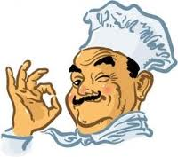
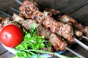

23. По-балкански720 г говяжьего филе, 50 г растительного масла, 200 г репчатого лука, 200 г шампиньонов, 15 г красного молотого перца, соль по вкусу.
Говяжье филе нарезать кубиками по 20 — 25 г. Растительное масло растереть с красным молотым перцем и подержать в нем мясо в эмалированной или глиняной посуде на холоде около часа. Лук и шампиньоны нарезать кольцами. Нанизать на шампуры, чередуя, кусочки мяса, лук и грибы. Сбрызнуть оставшимся маринадом и жарить над горящими углями.
Готовый шашлык подавать горячим на шампурах, посолив и поперчив по вкусу. В качестве гарнира можно подать свежие овощи.
24. Банкетный по-казахски
960 г баранины, 150 г репчатого лука, 175 г маринада, зелень, соль и специи по вкусу.
Для маринада: по 10 г моркови и лука, 3 г сельдерея, по 1 г корня петрушки и чеснока, несколько зерен тмина, 2 лавровых листа, несколько горошин черного перцаи почек гвоздики, 100 мл сухого белого вина, 50 г 3%-го уксуса, 25 г растительного масла.
Мясо нарезать кусочками по 15 г, посыпать солью, уложить надно керамической посуды, положить часть измельченных овощей и пряностей, затем — мясо, и снова овощи и пряности. Все полить уксусом, вином и маслом, поставить в холодное место на 8 — 10 ч. Мясо необходимо регулярно перемешивать, чтобы оно хорошо пропиталось маринадом. После этого мясо нанизать на металлические шпажки (по 8 кусочков мяса) и жарить над раскаленными углями в мангале.
Подают по 2 шпажки на порцию со сложным гарниром, зеленью и нарезанным кольцами маринованным репчатым луком.
25. Из вырезки (бастурма)
600 г говяжьей вырезки, 50 г репчатого лука, 80 г жира, 100 г помидоров, 1 ст. ложка крупно нарезанного зеленого лука, перец, соль и уксус по вкусу.
Мясо промыть, очистить от пленок, нарезать около 30 ломтиков, отбить их влажной тяпкой, придав каждому форму кружков толщиной около 1/2 см. Мелко нарубить лук. Куски мяса положить в эмалированную миску, пересыпав их рубленым луком, перцем и солью. Слегка сбрызнуть уксусом и держать мясо под крышкой в холодном месте 2 — 3 ч. Приготовить 4 деревянные палочки толщиной около 1/2 см — длиной около 15 см. На каждую палочку нанизать 6 — 8 кружков мяса, очистив их от лука и посыпав мукой.
Жарить на сковороде в сильно разогретом жире на палочках так, чтобы сверху образовалась румяная корочка, а внутри мясо было бы розовое. Подавать сразу после жаренья на подогретом блюде, украсив сырыми помидорами, нарезанными кружочками, и крупно нарезанным зеленым луком. В качестве гарнира можно подать картофель фри или стручковую фасоль и зеленый салат.
26. По-грузински (длинный мцвади)
1200 г говяжьей вырезки, 50 г растительного масла, 100 г аджики, 400 г помидоров, разнообразная зелень, перец и соль по вкусу.
Говяжью вырезку очистить от пленок, нарезать полоской длиной около 30 см и толщиной 2, 5 — 3 см и целиком надеть на вертел. Чтобы вырезка во время жаренья сохранила форму и не сокращалась, привязать ее плотно к вертелу толстыми нитками. Сбрызнуть вырезку растительным маслом. Поместить вертел над углями и, вращая, обжарить до готовности, при этом постоянно смачивая холодной водой.
Сочное мясо нарезать поперек волокон с небольшим скосом на ломтики толщиной до 2 см, посолить и поперчить по вкусу, смазать острой аджикой. Подать шашлык горячим с веточками зелени и отдельно обжаренными на вертеле горячими помидорами, сняв с них кожицу.
27. По-литовски (гинтарас)
720 г телятины, 200 г сала, лимон, 4 дольки чеснока, соль и перец по вкусу.
Нарезать телятину кусочками (толщина — 0, 5 см, ширина — 6 — 8, длина 10 — 12) и слегка отбить, посолить, поперчить, натереть толченым чесноком, сбрызнуть соком лимона и оставить в эмалированной посуде в холодном месте на 5 ч. Затем на куски мяса положить нарезанное маленькими кусочками сало, свернуть мясо рулетиком и скрепить деревянными шпильками, нанизать на шампуры и жарить над горящими углями до готовности, постоянно поворачивая и сбрызгивая разведенным в воде соком лимона. Можно зажарить такие рулетики и на гратаре. Подавать шашлык горячим со свежими овощами и зеленью.
28. По-узбекски
1000 г говядины, 100 г репчатого лука, 50 мл столового уксуса, по 5 г черного и красного перца, соль по вкусу.
Говяжью вырезку разрезать на две части, отбить каждый кусок деревянным молотком с обеих сторон, нарезать полосками длиной 15 см и шириной 3 см, посыпать солью, уложить в глиняную посуду рядами, пересыпав черным и красным молотым перцем и тонко нашинкованным репчатым луком, полить столовым уксусом, положить под пресс, оставить в холодном месте на 2 ч. Затем полоски мяса одеть на шампур (по две на одну порцию) и, поворачивая их, жарить на хорошо прогоревших углях до образования румяной корочки.
Подать к столу на шампурах, уложив их на блюдо. К шашлыку поразумевается салат из кислого граната с репчатым луком.